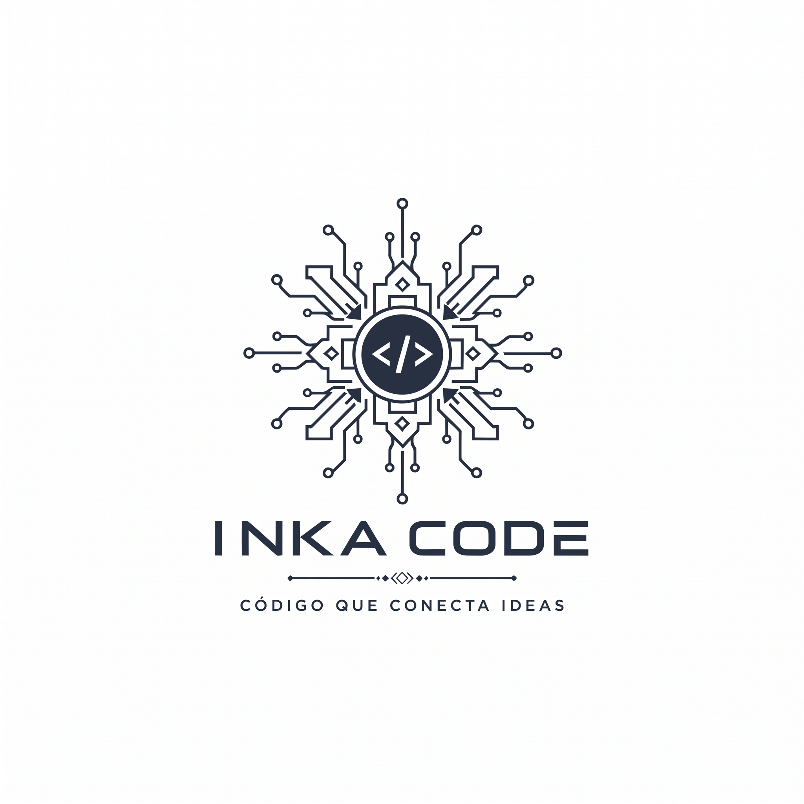

Programación
Practica lógica de programación, variables, condicionales, bucles y funciones.
Pon a prueba tus conocimientos sobre Sistemas Operativos, Redes, Programación y otros temas relacionados con Ingeniería de Sistemas e Informática.

Diferentes áreas de conocimiento para practicar y reforzar tus habilidades.
Practica lógica de programación, variables, condicionales, bucles y funciones.
Pon a prueba tus conocimientos sobre Linux, procesos, usuarios, permisos y administración.
Aprende y practica conceptos sobre OSI, TCP/IP, direccionamiento y protocolos.
Elige un tema y comienza a practicar.